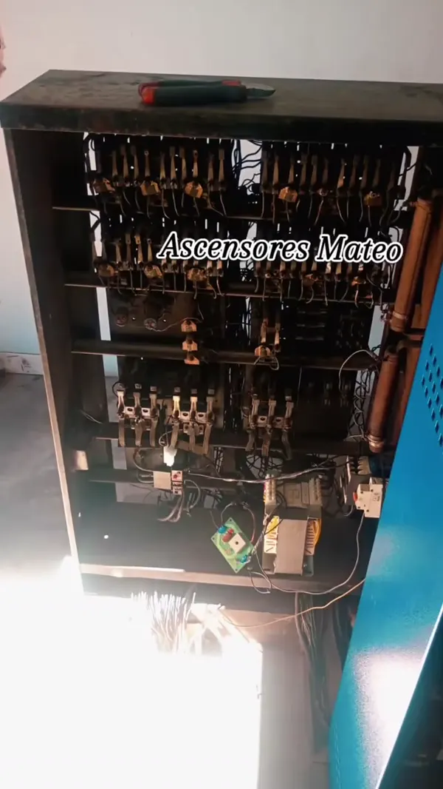
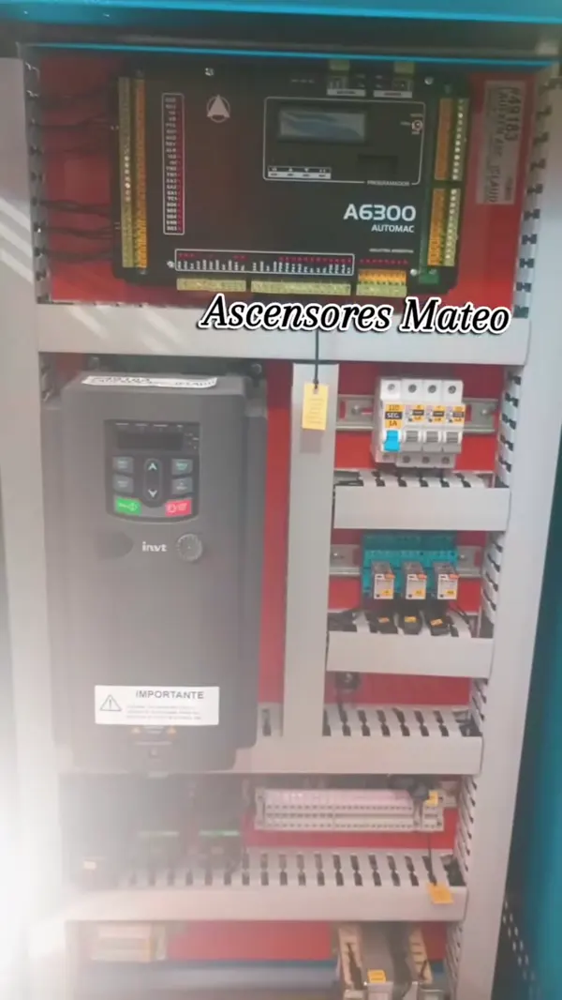
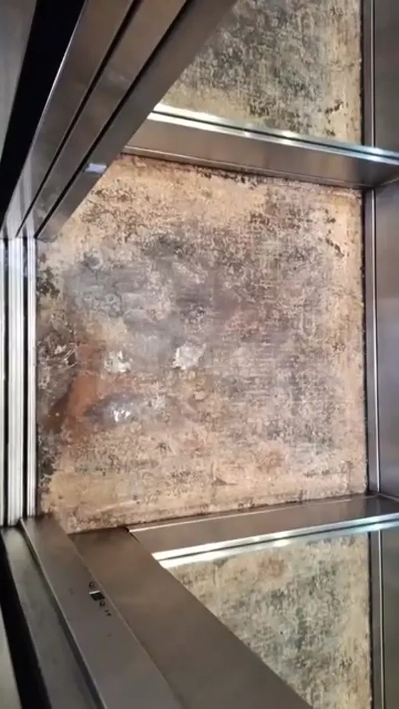
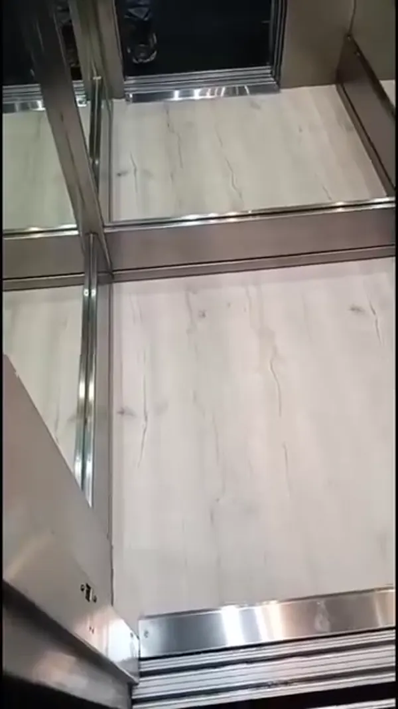

Para los vecinos que lo usan todos los días
Un ascensor en condiciones no solo evita problemas: también brinda seguridad a quienes lo usan todos los días.
Empresa conservadora de ascensores · CABA y alrededores
Conservación, mantenimiento, reparación, modernización e instalación de ascensores para consorcios, administraciones y constructoras. También portones eléctricos, bombas de agua y rampas monta autos.
Emergencias 24 hs · 11 2453-5172Piso 1 · Servicios
Ascensores
Nos hacemos cargo del ascensor del edificio como empresa conservadora: lo atendemos de forma permanente, con responsabilidad y cumplimiento normativo, y respondemos cuando el consorcio nos necesita.
Mantenimiento preventivo y servicio técnico especializado: revisamos el equipo antes de que aparezca la falla, para que el ascensor funcione seguro y sin interrupciones para quienes lo usan todos los días.
Cuando un ascensor se detiene, la respuesta tiene que ser inmediata. Contamos con atención permanente para resolver emergencias y garantizar la seguridad de los usuarios.
Tu ascensor también puede verse nuevo: modernizamos con tecnología actual, del tablero de maniobra a la cabina. Modernizar el ascensor también revaloriza el edificio.
Instalación de ascensores para constructoras y edificios: contanos en qué etapa está la obra y armamos el presupuesto con los datos del proyecto.
También en el edificio
Trabajamos con portones eléctricos del edificio. Contanos qué tipo de portón tienen y qué está pasando.
También nos ocupamos de las bombas de agua del edificio. Escribinos con la dirección y el problema.
Trabajamos con rampas monta autos de cocheras. Contanos cuántas son y para qué servicio nos necesitás.
Piso 2 · Para quién trabajamos
Un ascensor en condiciones no solo evita problemas: también brinda seguridad a quienes lo usan todos los días.
Atención permanente y respuesta rápida por WhatsApp, para que puedas darle una respuesta concreta al consorcio.
Instalación de ascensores con el presupuesto armado según los datos del proyecto y la etapa de la obra.
Ascensores, portones eléctricos, bombas de agua y rampas monta autos con la misma empresa.
Piso 3 · Trabajos realizados
Fotos y videos de nuestras obras. Deslizá para ver el antes y el después.




Piso 4 · Sobre nosotros
Somos Ascensores Mateo, empresa conservadora de ascensores en CABA y alrededores. Hacemos mantenimiento, reparaciones y emergencias, y modernizamos equipos con tecnología actual.
Trabajamos con responsabilidad, experiencia y cumplimiento normativo. Seguimos creciendo gracias a los clientes que vuelven a confiar en nosotros, y trabajamos siempre para dar lo mejor.
Piso 5 · Presupuesto sin cargo
Completá los datos del equipo y nos llega por WhatsApp todo lo que necesitamos para cotizar. Sin cargo y sin compromiso.
Piso 6 · Preguntas frecuentes
En la Ciudad Autónoma de Buenos Aires y alrededores. Contanos la dirección del edificio y te confirmamos.
Sí. Tenemos atención de emergencias las 24 horas: si el ascensor se detuvo, escribinos o llamanos al 11 2453-5172.
No. El presupuesto es sin cargo y sin compromiso. Escribinos por WhatsApp con los datos del edificio y te asesoramos.
Sí. Somos empresa conservadora de ascensores y trabajamos con consorcios, administraciones y constructoras.
Sí: portones eléctricos, bombas de agua y rampas monta autos.
La dirección del edificio, cuántos ascensores hay, cuántas paradas recorren y qué está pasando. Si podés, mandanos fotos de la cabina y de la sala de máquinas por WhatsApp.
Contacto directo
ASCENSORES MATEO
11 2453-5172WhatsApp y emergencias 24 hs · también 11 7848-9913
Pedir presupuesto por WhatsAppServicio en CABA y alrededores